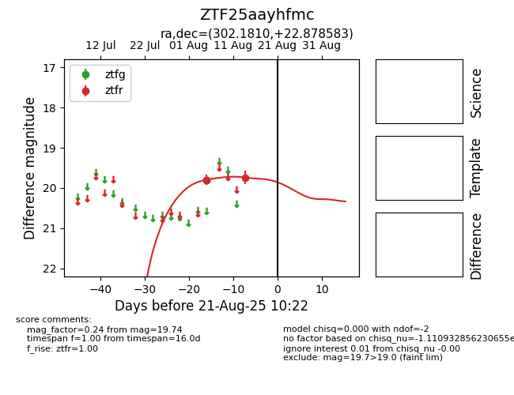

Target ZTF25aayhfmc at 2025-08-21 10:22, see:
FINK: fink-portal.org/ZTF25aayhfmc
Lasair: lasair-ztf.lsst.ac.uk/objects/ZTF25aayhfmc
ALeRCE: alerce.online/object/ZTF25aayhfmc
alt names
ZTF25aayhfmc (ztf,alerce)
coordinates:
equatorial (ra, dec) = (302.1810,+22.87858)
galactic (l, b) = (62.0866,-5.39531)
photometry
last ztfr=19.74
3 ztfr detections
